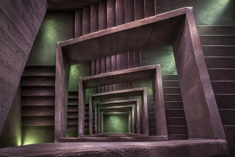

Uncanny / Liminal
Trace the architecture, fiction and visual language that make familiar places feel strange.
5 dossiers
All topicsBackrooms Kane Pixels Sun and Alchemy Motif
Two fan essays connect the recurring sun in Kane Pixels’ Backrooms to alchemical imagery. The dossier follows the motifs through the series and identifies where the interpretation remains speculative.
Backrooms Kane Pixels Timeline
A chronology of Kane Pixels’ fictional Backrooms, from Async Research and the Threshold to later incidents. It includes a cast of people and organizations, layered timelines and a short glossary.

Backrooms and Liminal Spaces Deep Dive
What makes an empty corridor feel familiar and unsettling at once? Explore how architecture, nostalgia and internet culture come together in liminal imagery and the Backrooms.

House of Leaves — Labyrinth, Uncanny Architecture and Impossible Evidence
Mark Z. Danielewski’s novel turns a house into an impossible space and its documentation into part of the story. Follow its layered narrators, contested evidence and links to contemporary liminal fiction.

Uncanny / Liminal Research Map
A map of liminal architecture, nostalgia, weird fiction and analog horror. It defines the recurring terms and connects literary works, online aesthetics and the Backrooms dossiers.